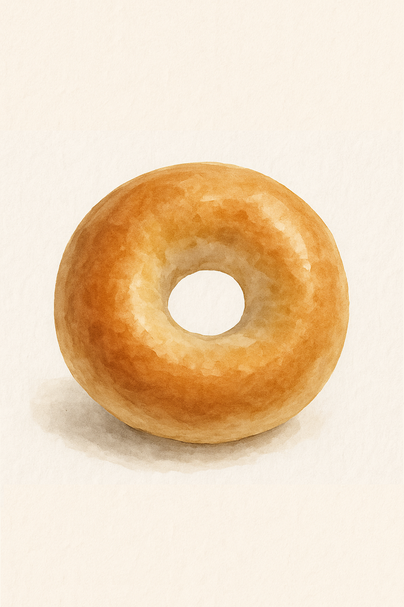
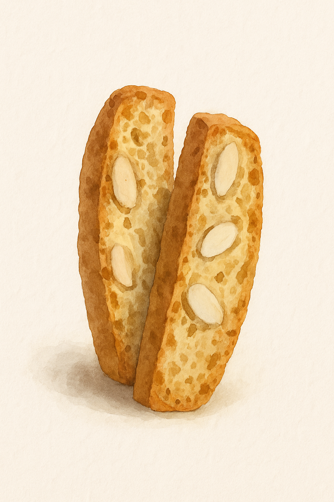
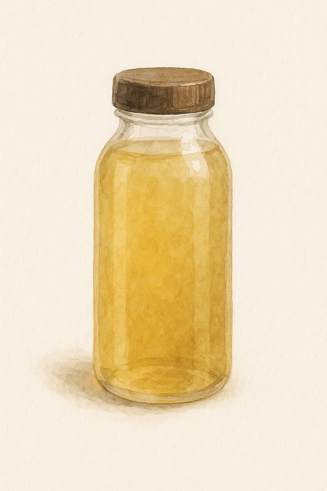

慢圈圈
悠閒的午後時光，咬下一口烤得恰到好處的貝果，蔓越莓帶來微酸果香，起司濃郁滑順，口口都有不同驚喜。不論是獨自享用，或與好友分享，這份手作的溫度總能在日常中，悄悄填滿心的空白。

咔咔小段
這款傳統義大利脆餅，帶著淡淡的杏仁香氣與紮實口感，是午後一杯咖啡的最佳伴侶。酥脆的口感中藏著堅果的溫潤，細細咀嚼，每一口都讓時光慢了下來，靜靜感受生活的節奏與餘韻。

茶茶子
低溫慢釀的冷泡茶，保留茶葉最純粹的甘甜與清香。冰涼滑順的茶湯，在悶熱午後為你帶來一絲透涼，如同夏日微風輕拂臉龐。少了苦澀，多了優雅，喝下的是片刻的清靜與清爽。